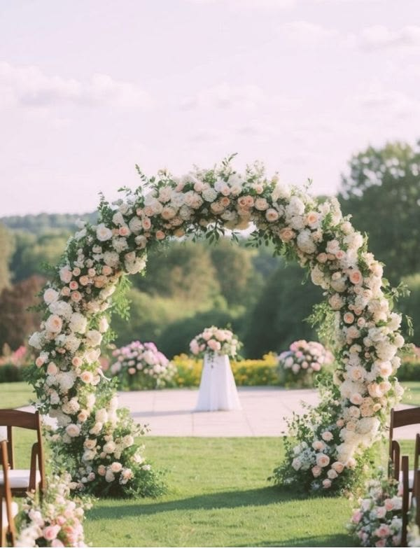

THE NICHE STUDIO
Florals for the day
you will describe forever
Garden Dreams is a wedding-first floral studio: one designer, one seasonal palette, one installation crew — from your first mood board to the last petal packed away.
FOUR SIGNATURE STYLES
What makes this service unique: we do not offer a catalogue of fifty designs. We offer four strong design languages — then tailor every stem to your venue, your season and your story.
Garden Romance
Loose, fragrant and abundant — garden roses, sweet peas and trailing jasmine that look gathered from a grandmother's backyard.
Wild Meadow
Grounded aisle meadows and asymmetric installations built to look grown, not placed. Our most requested 2026 direction.
Dried & Textured
Lunaria, bunny tails, bleached ferns and preserved grasses — sculptural, allergen-friendly and keepsake-able after the day.
Modern Minimal
Single-variety statements, architectural foliage and clean vessels for galleries, lofts and contemporary venues.
Unique by design,
not by decoration
Most florists sell you flowers. We design the moment those flowers are standing in — which is why our proposals include sightlines, light, timings and repurposing, not just a stem list.
- One designer start to finish — no hand-offs between sales and execution.
- Seasonal budgeting — we plan your palette around peak local blooms to stretch every dollar.
- Repurposing plan — ceremony pieces become reception pieces, saving up to 20%.
- Zero plastic wrap — compostable packaging across every installation.

FROM FIRST CALL TO FINAL PETAL
A calm, four-step process with fixed checkpoints — so nothing about your flowers is ever a surprise on the day.
Consultation & mood board
A 60-minute session (in studio or on video) covering your venue, palette, dress, budget and the feeling you want guests to have. You leave with a visual mood board.
Design proposal & quote
A line-by-line proposal with exact quantities, vessel plans, installation timings and a repurposing map. Fixed price — no surprise additions later.
Final tasting & stem confirm
We confirm every focal bloom against what is actually growing, send you photos of test arrangements and lock your delivery schedule.
Installation & refresh
Our crew installs early, repurposes ceremony pieces before reception, refreshes everything at sunset and packs down after your last dance.
REAL WEDDINGS, REAL VENUES
A look at recent installations — every stem cut from a grower we can name.



WEDDING PACKAGES
Transparent starting prices so you can budget before we ever talk. Every package is then tailored to your venue and guest count.
- Bridal + 2 bouquets
- 6 boutonnieres
- Ceremony focal piece
- Delivery & setup
- All Intimate inclusions
- Ceremony arch installation
- 12 reception centrepieces
- On-day refresh visit
- All Signature inclusions
- Full venue floral concept
- Hanging & structural installs
- Dedicated design lead
WHAT OUR COUPLES SAY
Nine out of ten of our weddings come from a previous couple's recommendation.
"They repurposed our ceremony meadow into the head table before we had even noticed it was missing. Guests kept asking where we bought 'second flowers'."

"The mood board matched our venue before we had even confirmed the date. Working with one designer from start to finish removed all the stress."

"Our budget was fixed and the quote never moved. We got more flowers than we planned because they knew exactly what was in season."

Let's design the flowers
your guests will photograph
Tell us your date, your venue and roughly what you love. We will reply within two business days with availability and a starting budget.